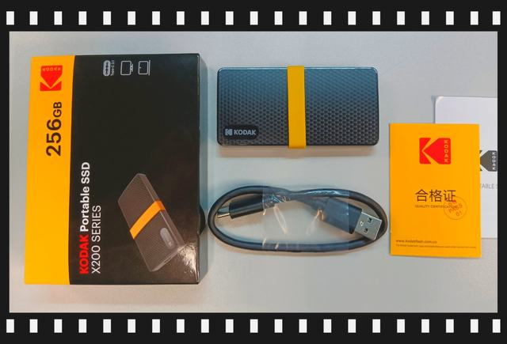
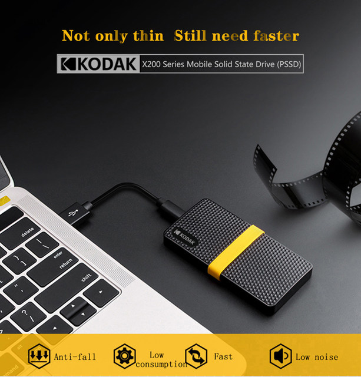
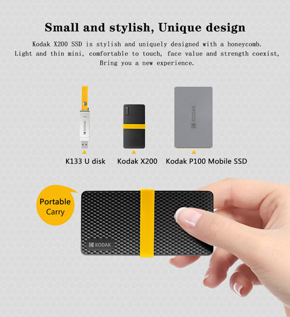
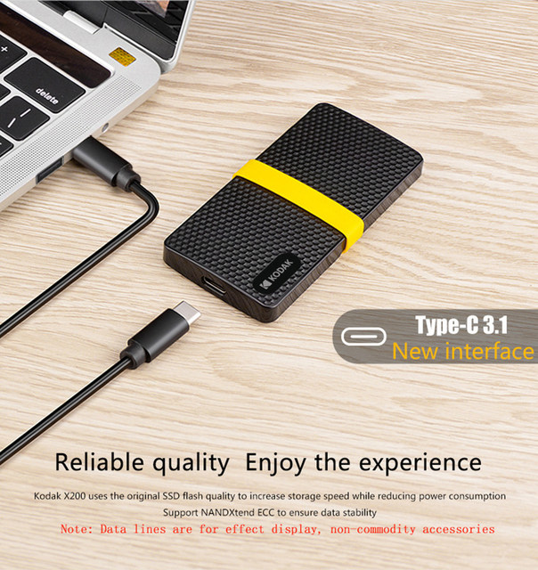
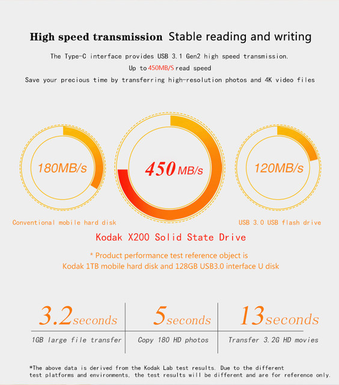

• Gran capacidad de almacenamiento:Con 2TB y 1TB de capacidad de almacenamiento, este SSD portátil proporciona un amplio espacio para todos sus archivos y documentos.
• Transferencia de datos de alta velocidad:La interfaz USB 3,1 tipo C garantiza una transferencia de datos rápida y eficiente, lo que hace que las transferencias de archivos sean muy rápidas.
• Compatibilidad con múltiples dispositivos:Este SSD portátil es compatible con una amplia gama de dispositivos, incluidos portátiles, MacBooks y PC, lo que lo convierte en una solución de almacenamiento versátil.
• Durable y confiable:Construido con tecnología de estado sólido, este SSD portátil es duradero y confiable, asegurando que sus datos estén seguros y protegidos.
X200:
Tasa de lectura: Hasta450MB/S. Tasa de Escritura: hasta420MB/S.
Datos de velocidad del sitio web oficial de Kodak.La Velocidad depende del dispositivo host, la interfaz, las condiciones de uso y el tipo de dispositivo.
Característica:
Sistema de soporte: Windows 10, 8, 7, Vista, XP / Mac OS 10,4 o superior/Linux 2.6.31 o superior.
Dispositivo de soporte: computadora/computadora portátil/TV Box/Car Media Player/Android Smartphone (con función OTG) y etc.
Sobre el uso: Plug and Play (no se necesita software)
Tipo de interfaz: Tipo C usb3.1/usb3.0 (compatible) /USB2.0 (compatible).
Cuerpo: a prueba de polvo, a prueba de golpes, diseño de panal único.
Peso: 38g peso (peso neto)
Tamaño: 90,5mm (L) x 45mm (W) x 10mm (H).
Sobre la capacidad:
256GB Aproximadamente 238GB
512GB Aproximadamente 476GB
1TB Aproximadamente 930GB
Los proveedores están utilizando la aritmética decimal: 1MB = 1000KB, 1G = 1000MB calculado, pero el sistema operativo está utilizando aritmética binaria: 1MB = 1024KB, 1GB = 1024MB. Así que hay algunas diferencias entre la capacidad de visualización y la capacidad nominal de los productos de memoria flash.




